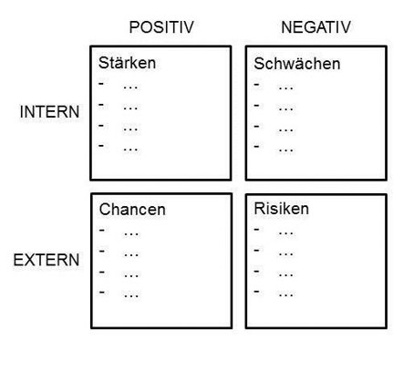

Nachhaltigkeit im Projektmanagement
León Kreutz
Manuel Geusen
Thorben Golfmann
Inhalt
- Was bedeutet Nachhaltigkeit?
- Nachhaltigkeit in projektorientierten Organisationen
- Nachhaltigkeit in Projektmanagement
Entstehung des Begriffes Nachhaltigkeit
- Scheinbar niemals endender Wachstums-und Fortschrittsoptimismus
- Keine Rücksicht auf Ressourcenverschwendung und Umweltverschmutzung
- Erstmals in den 80er Jahren von Bedeutung
Frage an euch:
Was bedeutet Nachhaltigkeit?
„Humanity has the ability to make development sustainable – to ensure that it meets the needs of the present without compromising the ability of future generations to meet their own needs."
-Definition des Brundtland-Berichtes von 1987, Gro Harlem Brundtland
„[...] nicht Gewinne zu erwirtschaften, die dann in Umwelt- und Sozialprojekte fließen, sondern Gewinne bereits umwelt- und sozialverträglich zu erwirtschaften."
-Pufé (2014)
- „Das Niveau der Abbaurate erneuerbarer Ressourcen darf ihre Regenerationsrate nicht übersteigen.
- Das Niveau der Emissionen darf nicht höher liegen als die Assimilationskapazität der betroffenen Ökosysteme.
- Sehr unterschiedliche Definitionen und Erklärungsversuche
- In unterschiedlichen Ansätzen verschiedene Themenschwerpunkte stärker oder schwächer behandelt
- Alle gemeinsam: Eine bedachte Nutzung und Verwendung von natürlichen Beständen
Ökologie
- Umweltschutz und der Schutz von natürlichen Ressourcen
- Erhaltung der biologischen Vielfalt
- Begrenzung von Risiko und Emission
- Senkung des Energieverbrauchs
Ökonomie
- Wirtschaftswachstum
- Wirtschaftlicher Wettbewerb
- Effizientes Wirtschaftssystem
- Stabilität der weltweiten Wirtschaft
Soziales
- Soziale Gerechtigkeit
- Gesundheit
- Menschenrechte
- Sicherheit
- Chancengleichheit
- Bildung
Nachhaltigkeit in projektorientierten Organisationen
- wichtiger Bestandteil für den Erfolg einer Organisation
- soziale, ökologische und finanzielle Vorteile
- z.B. Kosteneinsparungen, Konkurrenzvorteile
- nachhaltige Waren und Dienstleistungen sind schnell wachsende Märkte
P5- Standard

P5 Impact Analysis
- 17 Ziele
- Bewertung der einzelnen Ziele (-3 bis +3)
- Hohe Werte = hohes Risiko
- besondere Beachtung dieser Punkte im Projekt
Grundlagen für die Integration
- Integration muss Ziel der Organisation sein
- Nachhaltigkeitsziele müssen genauso definiert werden wie traditionelle Ziele
- Zeit für die Integration
Vorteile durch Nachhaltigkeit
- Kostensenkungspotenziale
- Mitarbeitermotivation
- Reputationsaufbau
- Sicherung von Marktanteilen
Messmethoden für Nachhaltigkeit
- Benötigt für die Außenwirkung
- Vergleiche mit anderen Organisationen
- Intern für die Bewertung der Ziele
Nachhaltigkeit in der Projektstartphase
- Höchster Stellenwert in dieser Projektphase
- Definition als (ein) Projektziel
Methoden zur Nachhaltigkeit
- Stakeholder Management(„Wer ist beteiligt?“, „Ziehen wir alle am gleichen Strang?“)
- Nachhaltigkeitsprinzipien in Projekthandbuch aufnehmen
- Erstellen und Auswerten eines Nachhaltigkeitsfragebogens
- Fragen u.a. zu Gesundheit, Sicherheit, Gerechtigkeit, Gleichheit, Umwelt, Klima
- Originalfragen(Auszug):
- „Umfasst das Projekt eine Waldrodung oder eine Plantagenanlage ohne ein unabhängiges Zertifizierungssiegel für eine nachhaltige Waldbewirtschaftung?
- „Bringt das Projekt ökologische oder soziale Auswirkungen, die sich auf Urvölker oder andere gefährdete Gruppen auswirken können?“
- Originalfragen(Auszug):
- „Hat das Projekt einen negativen Einfluss auf die Gleichstellung der Geschlechter?“
- „Könnte das Projekt zu einer Veränderung, Beschädigung oder Vernichtung von Kulturdenkmälern führen?“
- SWOT-Analyse
- „Methoden scheinen noch nicht weit verbreitet zu sein und sollten daher genauer erforscht werden." (vgl. Ramona Wolfgang et al.; Nachhaltigkeit im Projektmanagement; 2018 (Springer Gabler))
Nachhaltigkeit in der Projektstartphase (SWOT-Analyse)
Nachhaltigkeit in der Projektstartphase (Stakeholderanalyse)
- Stakeholder eines Projekts stellen wichtige Ressource dar
- Stakeholder sind grundlegend für den Erfolg des Projektes
- Projekt zeichnet sich durch Menschen mit verschiedensten Einflüssen, Werten und Qualifikationen aus
- Analyse in vier Schritten möglich:
- Identifizierung der Stakeholder
- Analyse der Stakeholder
- Wer könnte das Projekt zum scheitern bringen?
- Ableitung von Konsequenzen für das Stakeholdermanagement und Maßnahmen für das Risikomanagement definieren
Nachhaltigkeit in der Projektdurchführungsphase
- Flugreisen reduzieren
- Papier einsparen
- Erarbeitetes Material erneut einsetzen
- Taxikosten sparen
- Recycle bares oder aus nachwachsenden Rohstoffen gewonnenes Arbeitsmaterial verwenden
- Biologische Abbaubarkeit sicherstellen
- Menge von Ressourcen kritisch hinterfragen (oft großes Einsparungspotential)
- Grundlegende Idee: Engere Zusammenarbeit/Kommunikation mit CSR Officer oder Nachhaltigkeitsbeauftragten
- „… für die Umsetzung von Nachhaltigkeit in der Projektdurchführung (gibt es nur) begrenzt gute Beispiele …“, da Prozess der Zusammenführung von Nachhaltigkeitskonzepten und PM-Konzepten erst am Anfang ist
- Allgemeingültige Betrachtungsobjekte konnten nicht identifiziert werden
Nachhaltigkeit in der Projektabschlussphase
- Phase wird in Bezug auf Nachhaltigkeit oft vernachlässigt (Zeitmangel)
- Projektunterlagen und Dokumente wichtig für „Lessons Learned“(PM: Projekt-Retrospektive) (hoher Stellenwert für Nachhaltigkeit)
- Nachhaltigkeit dadurch schon zum Teil umgesetzt
- 5 von 6 Unternehmen haben Umsetzungsansätze welche Wissensmanagement oder Wissensdatenbanken bzw. Lessons Learned beinhalten
- Diese Themen kommen aber wohl oft zu kurz
- „ließt eh keiner“, „Wissen bleibt eh nur bei einem Mitarbeiter“, „Projektergebnis wurde ja erreicht, daher muss es nicht gemacht werden“, „Geld ist knapp, daher wird drauf verzichtet“
- „Wahnsinn, dass diese Themen oft nicht realisiert werden“
- Gutes , reales Beispiel für Lessons Learned:
- Es existiert ein etablierter Lessons Learned Prozess
- Geschulte Mitarbeiter sammeln und dokumentieren Erfahrungen und Eindrücke der Projektbeteiligten in einer Art Workshop
- Diese werden dann unternehmensweit verbreitet und jeder hat die Möglichkeit sich diese auch durchzulesen
- Weiteres reales Beispiel:
- Zum Ende des Projekts wird in einem Abschlussworkshop reflektiert und dokumentiert was gut und schlecht gelaufen ist.
- Informationen werden dann in der Mitarbeiterzeitschrift veröffentlicht
- Lessons Learned sollte lieber auf persönlicher Basis stattfinden
- Warum? Informationen die von einer Person verfasst wurden sind nicht immer für alle verständlich (z.B.: aufgrund von anderen Erfahrungen)
- Lösung: Persönlicher Austausch.
- Mögliches Problem: Informationen sind flüchtig und nur von kurzer Dauer
- Daher auch keine perfekte Lösung
Weitere Maßnahmen/Beispiele für Nachhaltigkeit im PM
- Unzufriedenen MitarbeiterInnen neue Rollen geben (Fluktuation verringern)
- MitarbeiterInnen weiterbilden/schulen um diese langfristig zu halten (Fluktuation verringern)
- Nachhaltige Projekte an sich: https://www.ecocrowd.de/
Weitere Maßnahmen/Beispiele für Nachhaltigkeit im PM
- Ökologische Dimension
- Bauprojekt: Bauwerk mit sehr guter Energiebilanz konstruieren
- Internat. Projekte: Kommunikation virtuell abwickeln statt zu reisen
- Produktentwicklung: ressourcenschonend Designen
- Ökonomische Dimension
- Bauprojekt: Arbeitskräfte aus der Region beschäftigen; stärkt das Wachstum der heimischen Wirtschaft
- Produktentwicklung: Regionale Zulieferer einbeziehen
- Soziale Dimension
- Bauprojekt: Arbeitskräfte Sicherheitsunterweisungen unterziehen (Arbeitsunfälle vermeiden)
- Internat. Projekte: Interkulturelle und „Technik“ Schulungen durchführen (entscheidend für Projekterfolg)
- Produktentwicklung: Soziale Kompetenzen verbessern um Kommunikation und Teamarbeit zu fördern
Vielen Dank für eure Aufmerksamkeit
Quellen: Nachhaltigkeit im Projektmanagement, Ramona Wolfgang 2018 21.11.2018
https://ibu-epd.com/wp-content/uploads/2016/03/3S%C3%A4ulen.png 21.11.2018
https://www.joebarrios.com/wp-content/uploads/2017/05/iStock-509891021-768x512.jpg, 21.11.2018